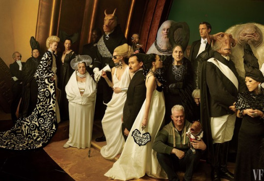

This is not your average blog or website. It is a mechanism; a vehicle, for information dissemination to a tight niche of people. The people who are interested in this website (and others similar to it) are unique. Please make sure that you BELONG here before going further.
This is a “closed area”, or “restricted use” zone.
If you are here, then there is a reason. If there is one thing that is absolutely true about our reality it is that nothing is a random coincidence. There are reasons for everything.
You are NOT on the “approved” Internet. You are in the “grey area” of the Internet. This website is part of the grey web.
The Visible Web – The White Web
Everyone knows what the “The Web” is; it is the “Internet”. Yet, what people do not realize is that the Internet is actually more than what we think it is. What we think of the Internet is what we are exposed to: the “visible internet”. This visible portion is the parts of the internet that we can access. It is the part that search engines can find.
It is the portion of the internet that has been approved for general population access. It is the portion of the internet that the various search engines and their governments have not restricted, nor have “shadow banned” using various techniques.
The “visible web” is the limited section of the Internet that is accessible by Search Engines. It is the area that YOU are approved to access.
The Dark Web
The direct opposite of the (white) internet is the “dark web”. The dark web is the part of the Internet that the search engines cannot find.
Many people prefer not to use the “visible internet”. Instead, they prefer to go “dark”. They do not advertise and enhance their website. They do not link to Facebook, use Twitter, or permit Google to access their website content. There are no meta descriptors. There are no SEO enhancements. They are surreptitious. They are invisible to search engines. They have gone “X-ray”.
The only way you can access these websites is through word-of-mouth. Otherwise, they simply cannot be found. They are dark.
This “Dark Web” gets a lot of bad press. Firstly, because people can access sites and bypass all the government approved check points, and secondly, because many BAD people use it.
Many criminals use the dark side of the Internet. You can get involved in all kinds of illegal and just plain wrong activities on the Dark Web. This can include such things are buying and selling malware, generating and selling bugs to infect other computers, creation of bots, child exploitation, and surreptitious communications.
It’s full of all kinds of scary monsters and nightmares.
The Grey Web
This website is neither part of the “Visible White Web”, nor is it part of the “Dark Web”. This website is part of the “Grey Web”.
That is true, and it is an important point. It is neither a member of the “Dark Web”, or is it a member of the “visible Internet” (the White Web). It is something else different altogether.
Today, in our highly politically charged environment, many people are going grey. This includes scientists, researchers, friends, and artists. Many, like myself, l feel that the visibility of the “White Web” is a distraction.
The vaunted “free access” by the Silicon Giants is a lie and a distraction. By opening up the floodgate where everyone (from one-year-olds to cantankerous 100-year-olds) can access your website is actually counter-productive. It distracts from the purpose of the website page(s) so accessed.
The websites get flooded by bots. The websites are open and susceptible to malware and attacks. Their comment sections are flooded with advertisements, spam, and just swamped with useless comments from just about everyone.
Not to mention that they are purposefully EDITED, or BANNED outright if the content does not fit the propagandized narrative that the oligarchs dictate. The white web (the internet) has become a very sanitized space. It is now designed to allow the perception of free speech. In all actuality, it narrates and directs speech towards propagandized objectives.
The grey web avoids this.
In the “Grey Web”, the website can be accessed by major search engines. However, SEO is not nearly as important as word-of-mouth advertisement. Access to the grey web is not restricted. However, participation in it is.
While the White Web is for everyone and the Dark Web is for those who are involved in borderline legal activities, the Grey Web is for influencers.
- The ability to access and read the content is free.
- However, the ability to comment is tightly controlled and restricted.
- Further, the [1] selection of content and the [2] direction of discussion is controlled by the influencers.
- Influencers pay for that privilege through donations.
Thus we have a situation where you have a semi-visible website, that can (under certain circumstances) be found through use of a search engine. It is designed for certain objectives, of which mass-marketing to everyone, is NOT one of them. The key to the “success” of this kind of website are the influencers that it attracts.
What this means…
What all this means is that the purposes, intentions, the system of communication, comments, and articles are handled quite differently than that of a “normal” Internet website.
The idea is NOT to make it “fair” for everyone to have an equal say in the comments. The idea is that the speech is not edited with the intention that no one will be offended, or that an “approved” narrative would be reinforced. The idea is to create a system for the exchange of information that allows a tightly monitored and policed forum to comment on the information.
All comments are content reviewed.
Those that do not meet the following guidelines are erased and deleted. They are never permitted to be posted herein;
- Comments must be civil.
- No “drive-by” comments permitted. This means, of course, no simple trite sayings, abbreviated comments, overt use of slang or emoticons, or witty rebuttals to another comment. You can go elsewhere if that is your idea of fun.
- Comments MUST contribute, offer something new, or suggest something. The comments should ADD to the article. It should not distract from it.
- We strive to have comments that have value. Exceedingly nonsensical or common thoughts will be removed at the discretion of the moderation team, as will thoughts that are poorly written, overly vulgar, or obscene.
- Positive comments, even if it is a “thank you” are always welcome. They might not get to be posted, but they are appreciated.
- All content must be original and unique. Really, why bother posting someone else’s thoughts? If you have something unique and thought-provoking to say, then please say it.
- No jokes, puns, or wordplay.
- No spam, advertisements, off-subject topics, or disjointed rants.
- Please focus on the particular post subject. No off-topic thoughts about politics, social justice, or religion.
- Please, let’s not devolve into discussions about the Jews. OK?
- Don’t be a jerk.
The best comments are those that suggest that the article has awakened a thought or a notion that needs expounding upon. That is the BEST way for information to be disseminated using this forum. While there are things that I just cannot talk about, comments by others do not have those limitations.
Thus, the real and true value of this website becomes apparent.
Oh, and importantly…
- No obvious secrets or release of SAP documentation. Use Wikileaks or Kim Dot Com for that. Not here. This website is open at the pleasure of MAJestic and can be shut down just as easily.
- Please do not bad-mouth China. They are kind enough to host me here. Do not jeopardize that privilege.
In short, Metallicman publishes selected comments on the articles under discussion here. The primary criterion is that comments contribute meaningfully to the debate. Among other criteria for selection: Comments must be on topic, directly related to the post in question, must use appropriate language and must not be abusive to others. Civility counts. In addition, a valid email address is required for a comment to be considered. This is emphatically not a soapbox for political or religious views submitted by individuals or organizations.
The short form is this: If your comment is not on topic and respectful to your fellow readers, I’m probably not going to run it.
Influencers
To become an influencer, please simply send me a donation and a short message. You can buy your way into that role, but it will be your written contributions that will measure your value.

There are two kinds of influencers;
- A person who has made a donation and who provides comments and insight.
- A person who wishes to contribute to the articles. If you wish to fall into this category, then please be advised that everything that you wish to post must be cleared by my handlers first. Your “handle” will be used to identify you and be used to differentiate you from the rest of the articles on this website.